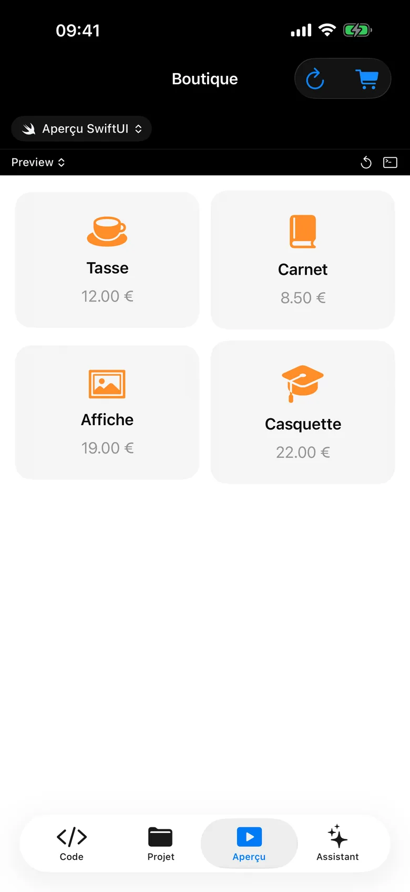
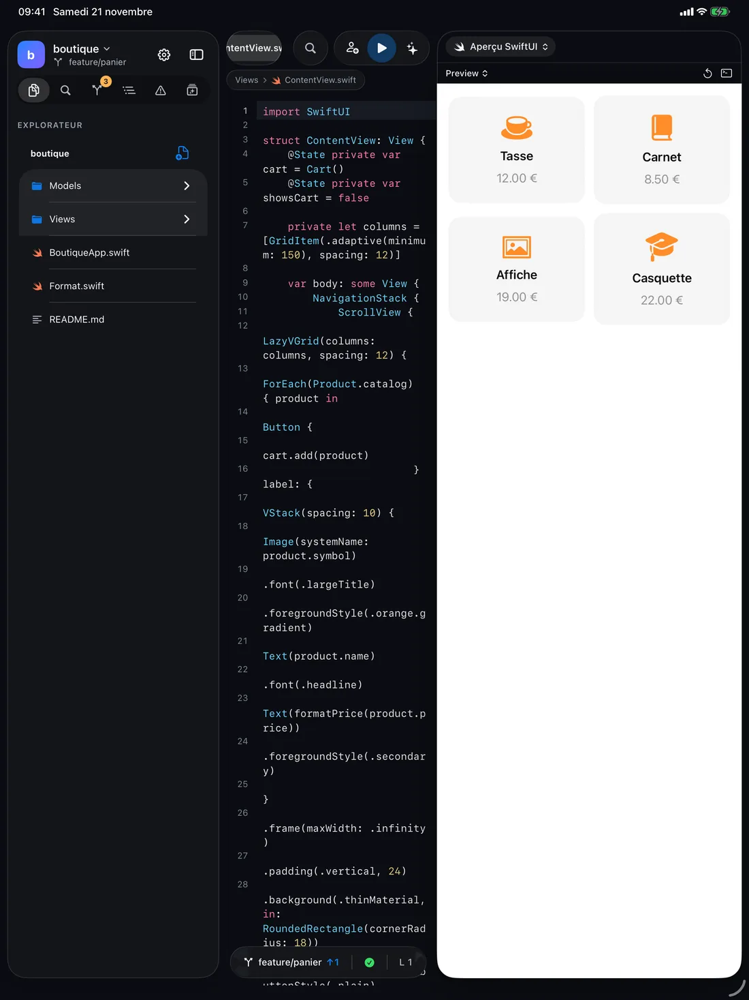
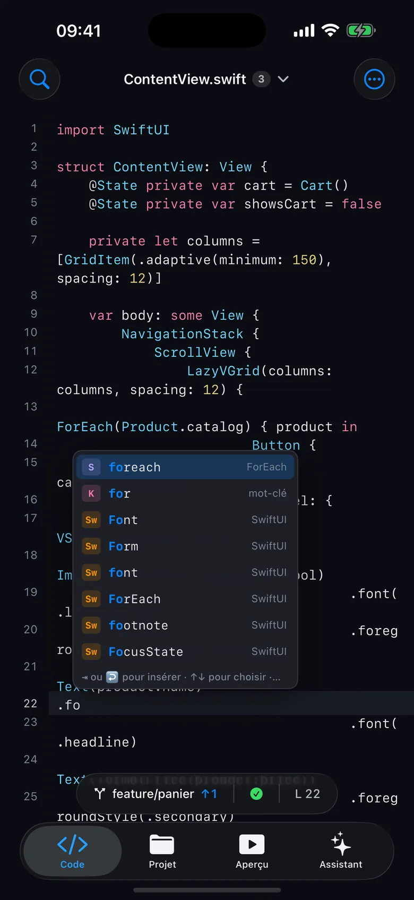
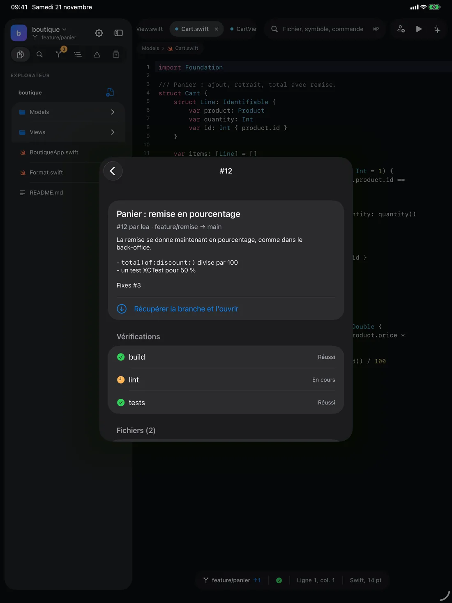
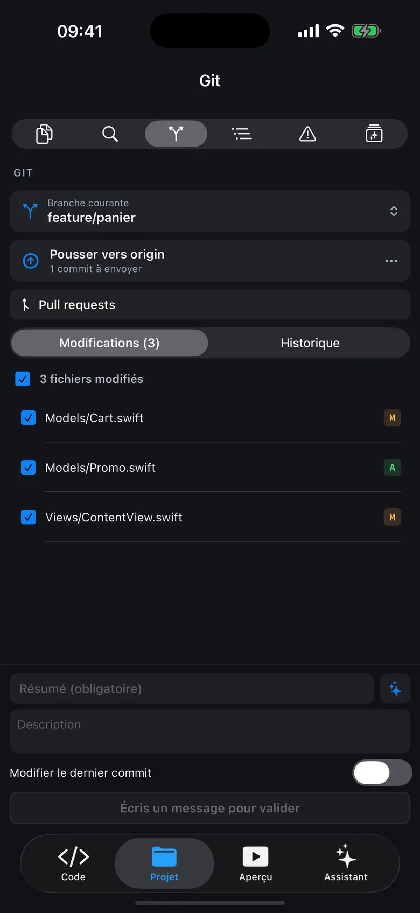
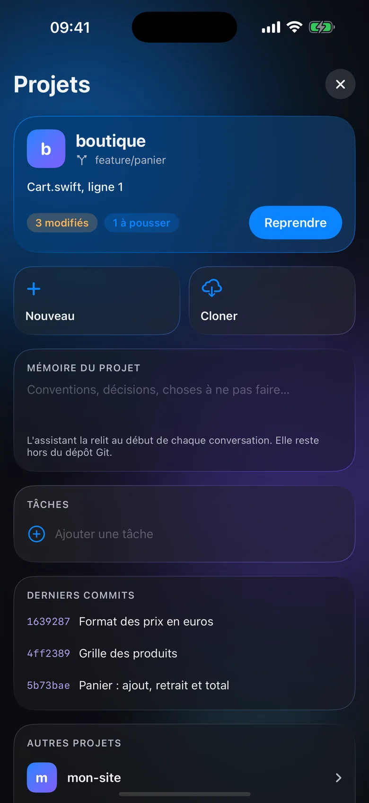
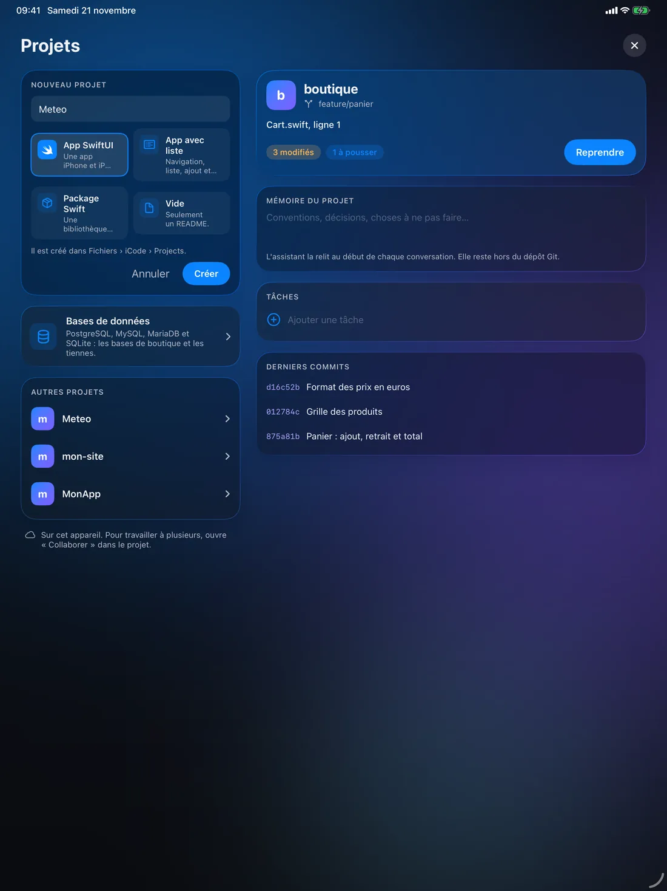

La vitesse du natif
Swift, SwiftUI et le moteur de texte d’iOS. L’éditeur s’ouvre tout de suite et défile sans à-coups, même sur un gros fichier.

Le vrai environnement de développement Swift pour iPhone et iPad. Écris ton app en SwiftUI, regarde-la prendre vie à côté du code, lance-la dans le vrai simulateur et versionne-la avec Git. L’IA est en option : celle de ton appareil, gratuite, ou celle de ton choix.
100 % natif SwiftUI · Fonctionne hors ligne · Aucun compte iCode

Tout ce que tu attends d’Xcode, de JetBrains ou de VS Code pour écrire une app Swift, réécrit pour iPhone et iPad, sans web view entre toi et ton code.
Swift, SwiftUI et le moteur de texte d’iOS. L’éditeur s’ouvre tout de suite et défile sans à-coups, même sur un gros fichier.
Une variable jamais lue, un type mal tapé, une API dépréciée : c’est souligné pendant que tu tapes, expliqué sur la ligne et regroupé dans le panneau Problèmes.
Vues, modificateurs, mots-clés, types et symboles de ton projet. Elle s’ouvre toute seule et se valide d’une touche.
App SwiftUI, app avec liste et navigation, package Swift : choisis un modèle, donne un nom, et ton app tourne déjà dans l’aperçu.
Aller à la définition, trouver les usages, aller au symbole, renommer dans tout le projet, rechercher et remplacer partout.
Chaque projet garde sa branche, tes onglets, ses tâches, ses derniers commits et une mémoire que l’assistant relit avant de t’aider.
L’aperçu intégré fait tourner tes vues SwiftUI directement sur l’iPhone ou l’iPad et se met à jour à chaque modification. Pas de Mac, pas de compilation : tu touches ton interface pendant que tu l’écris.

Installe iCode Runner sur ton Mac. iCode y envoie ton projet, Xcode le compile et le lance dans le simulateur, et son écran s’affiche en direct sur ton iPad ou ton iPhone. Tu touches, tu tapes, ton app répond.
Tape .fo et iCode te propose .font, .foregroundStyle ou ForEach, avec leur type. Il connaît SwiftUI et les types de ton projet.

Branche un clavier sur ton iPad et retrouve les raccourcis d’Xcode, de JetBrains et de VS Code. Maintiens ⌘ pour tous les voir.
Essaie : appuie sur ⌘⇧P (ou Ctrl⇧P) maintenant.
Inspiré de GitHub Desktop. Coche tes fichiers, relis le diff, écris ton message, commit. Les branches, la fusion et tes pull requests sont à un tap.
Le diff bloc par bloc, avec le nom de la fonction touchée. Laisse l’assistant rédiger ton message, valide, pousse, puis suis ta pull request et ses vérifications sans quitter iCode.


iCode embarque l’IA d’Apple, directement sur l’appareil : gratuite, privée, sans clé. Avec Pro, branche Claude, ChatGPT, Gemini, Mistral ou ton propre serveur. L’agent lit et modifie tes fichiers Swift, et tu valides chaque changement.
Ouvre la base SwiftData de ton aperçu, celle de l’app qui tourne dans le simulateur, ou tes serveurs PostgreSQL et MySQL. Parcours les tables, écris ton SQL, et laisse l’IA le faire pour toi.
SELECT name, price FROM product WHERE price < 20 ORDER BY price; ── 3 lignes · 2 ms ───────────────── Carnet 8.50 Tasse 12.00 Affiche 19.00
SwiftUI, Liquid Glass, widgets, Live Activities et Dynamic Island. iCode se comporte comme une app d’Apple.
Push vers originfeature/panierClone, pull, push et réponses de l’IA continuent pendant que tu fais autre chose. Tu suis tout depuis l’écran verrouillé.
Une seule interface qui s’adapte : des onglets au pouce sur iPhone, la barre latérale et l’aperçu côte à côte sur iPad, et une vraie mise en page de bureau sur Mac, bientôt à télécharger.


iCode, écran par écran.
L’éditeur Swift, l’aperçu SwiftUI, Git en local et l’IA de l’appareil sont gratuits. Pro ajoute le vrai simulateur, Git en réseau et les pull requests, toutes les IA et les bases de données.
Prix de lancement TTC en France, achetés dans l’app. Abonnement renouvelé automatiquement, géré et résiliable depuis les réglages de ton compte Apple. L’achat à vie est un paiement unique. Avec ta propre clé, l’usage de l’IA est facturé par le fournisseur que tu choisis. iCode Runner demande un Mac avec Xcode.
Oui. Tu écris ton app en Swift et SwiftUI dans iCode et tu la vois tourner dans l’aperçu intégré, sans Mac. Pour la compiler et la lancer dans le vrai simulateur, iCode Runner s’en charge sur ton Mac (Pro). Ton projet reste un projet Swift standard, que tu peux aussi ouvrir dans Xcode.
Une petite app gratuite pour Mac, signée et vérifiée par Apple. Elle reçoit ton projet depuis iCode, le compile avec Xcode, le lance dans le simulateur de ton choix et renvoie son écran sur ton iPad ou ton iPhone. Il faut un Mac sous macOS 14 ou plus récent avec Xcode, sur le même réseau. Télécharger iCode Runner.
Non. iCode est d’abord un environnement de développement et un client Git complets. Sur les appareils compatibles Apple Intelligence, l’IA d’Apple est incluse gratuitement et tourne sur l’appareil. Avec Pro, tu peux brancher Claude, ChatGPT, Gemini, Mistral, OpenRouter ou ton propre serveur avec ta clé.
Sur ton appareil. Les projets sont stockés localement, les clés et les mots de passe de bases de données dans le Trousseau d’iOS. iCode n’a pas de serveur : quand tu utilises une IA en ligne, la requête part directement de ton appareil vers le fournisseur choisi. Le détail est dans notre politique de confidentialité.
GitHub, GitLab, Bitbucket, Gitea ou ton propre serveur : tout dépôt accessible en HTTPS. Pour un dépôt privé, tu utilises un jeton d’accès personnel. Les pull requests sont prises en charge pour GitHub.
iPhone et iPad sous iOS 17 ou ultérieur. Liquid Glass, les Live Activities et la Dynamic Island profitent d’iOS 26, et l’IA d’Apple demande un appareil compatible Apple Intelligence. Une version Mac arrive bientôt.
La bêta passe par TestFlight. Écris-nous depuis la page Support pour recevoir une invitation.
Un vrai IDE Swift, l’aperçu en direct, le simulateur et Git, sur iPhone et iPad.
Rejoindre la bêta TestFlight